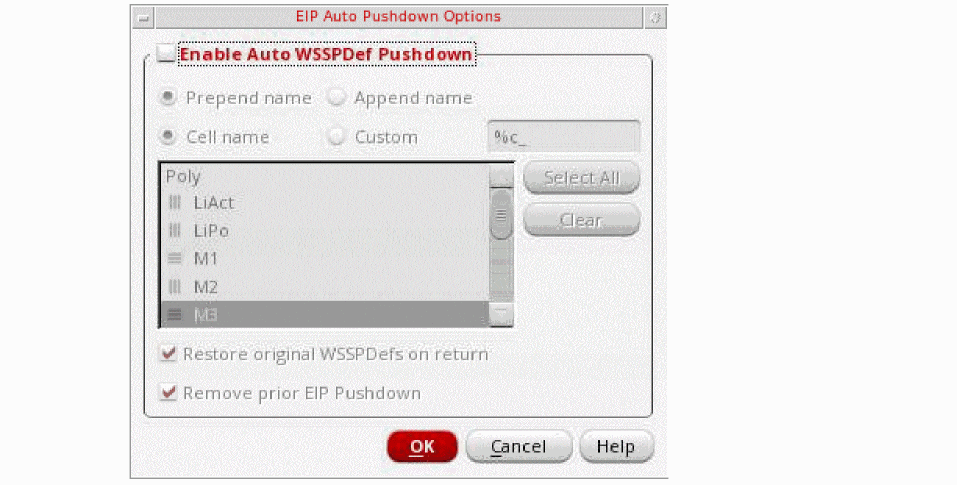

Pushing down WSSPDefs in EIP
You can use the EIP Auto Pushdown Options icon on the toolbar in the Track Pattern assistant to have pins in a subcell snap to the top-level WSP tracks.
This option lets you copy WSPs from the parent cell into the subcell when entering Edit-in-place. You could use this to adjust pin locations in subcells to match the top level cell’s WSP locations. However, all standard WSP-based functionality is still applicable, such as there is no limitation to perform edits to pins. This means that pathSegs and wires also snap to the pushed down WSPs.
If the Enable Auto WSSPDef Pushdown option is enabled on the EIP Auto Pushdown Options form, the WSPs are pulled down on the desired layers in the subcell. The subcell is renamed based on the top-level cell name to reflect the origin of the WSPs.
To push down WSSPDefs snap to the top-level WSP tracks:
- Select an instance that has WSSPDefs in the layout.
-
Click the EIP Auto Pushdown Options icon on the toolbar in the Track Pattern assistant.
The EIP Auto Pushdown Options form opens.
 - Select the Enable Auto WSSPDef Pushdown check box.
- Select prepend name, append name, cell name or custom to add the parent cellview name appropriately to the WSSPDef name that is pulled down.
- Select the pushdown layer from the list box.
- Select the Restore original WSSPDefs on return check box to turn to top and revert the subcell to the same active WSPs present prior to the EIP pushdown.
- Select the Remove prior EIP Pushdown check box to remove the WSPs that have been created in prior EIP pushdowns.
showIndexDisplayBtn, is set to t.Related Topics
Launching the Track Pattern Assistant
Track Pattern Assistant Toolbar
Return to top